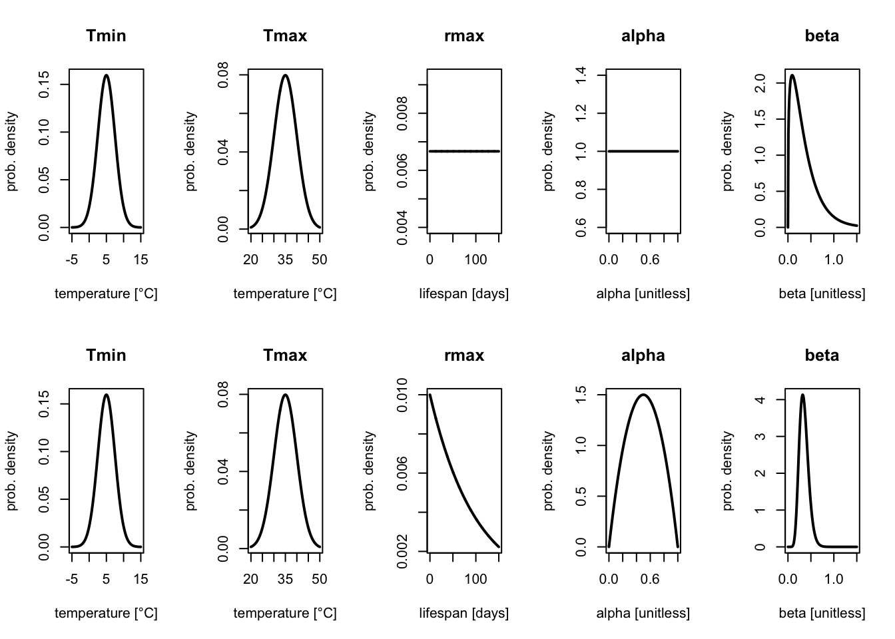

round(qexp(c(0.025, 0.975), 1/100), 1) # Exponential distribution is parameterized with rate parameter lambda = 1 / mu.[1] 2.5 368.9A prior distribution represents our initial state of uncertainty about the value of the model parameters. Prior distributions can vary in their informativeness, depending the desired effect of the prior choices in the analysis.
On one extreme, priors can be noninformative (or very weakly informative), only constraining the parameters slightly (e.g. only constraining trait performance to be non-negative, or within a certain order of magnitude that is biologically relevant). This kind of prior is used in order to minimize its effect on parameter inference in order to let the data “do the heavy lifting”. The upside of these priors is that they decrease the influence of a priori assumptions made by the analyst about the model parameters on the results. The downside is that models with biologically unrealistic parameter values (e.g. unrealistic thermal minimum or maximum for the organism, extremely skewed curves, curves with an unrealistic thermal breadth, etc.) are assumed plausible and are considered in equal footing with more realistic models when determining the remaining uncertainty on the model parameters (e.g. with credible intervals). This is especially an issue when data is limited.
On the other extreme, priors can be strongly informative, having tighter constraints on the parameters that can have a large influence in the results of the analysis. This can be desirable when there is a good source of information about the parameters independent of the data (e.g. previous experiments in related species or information about the species habitat), especially when data is limited. However, strong priors that make inaccurate assumptions can lead to erroneous results, so it is important to be careful in their usage. Moreover, it is considered good practice to make priors less informative than the researcher’s true beliefs about the parameter to account for the possibility of being wrong, as well as for any experimental conditions being different from the previous sources of information.
Sometimes, informative priors can also be used as a form of regularization, preferring simple models over complex models unless the complexity is necessary to describe the data. As the quadratic model is a special case of flexTPC, priors for \(\alpha\) and \(\beta\) can be chosen that pull the parameter estimates closer to those of the quadratic model.
In general, we prefer the use of weakly to moderately informative priors when good sources of information for constraining the model parameters are available from previous experiments in related species, the species habitat or biological/physical constraints.
One important consideration is that prior distributions should be chosen from information independent from the dataset that will be used for fitting (i.e. not from those data points). Not doing this violates the assumptions of Bayesian statistics by using the data twice, which will lead to overconfident predictions.
One advantage of flexTPC relative to other approaches is its intuitive parameters, which allow setting informative prior distributions to incorporate information from previous experiments or the species habitat when data is scarce. In this section, we’ll start by providing suggestions on the type of prior distribution to use for each model parameter when using flexTPC.
We suggest the use of normal priors for the minimum and maximum temperatures, which do not introduce a hard boundary to the allowed temperatures. The location can be set with the mean of the distribution and the standard deviation determines how informative the prior is (with larger standard deviations corresponding to less informative priors).
For example, a reasonable prior for the minimum temperature for mosquito lifespan could be:
\[T_{\min} \sim \mathrm{Normal}(\mu=\text{5°C}, \sigma=\text{2.5°C})\]
One way to conceptualize the assumption that is made by a prior distribution is to consider a 95% credible interval assumed by the prior. This is an interval that our prior assumes the true value of the parameter is with 95% probability. With a normal distribution, an approximate prior 95% CI is given by the interval \([\mu - 2 \sigma, \mu + 2 \sigma]\) (which would be \([\text{0°C},\text{10°C}]\) in our example). This prior is thus assuming that \(T_\min\) is 95% likely to be in this interval, although it still gives 5% probability that it is outside this interval.
We can follow a similar approach to construct a prior for the maximum temperature. If we want a 95% prior credible interval for the maximum temperature to be \([\text{25°C}, \text{45°C}]\), we can set the following normal distribution as a prior:
\[T_{\max} \sim \mathrm{Normal}(\mu=\text{35°C}, \sigma=\text{5°C})\] which ensures the prior 95% CI is what we intend.
We typically deal with traits that are strictly non-negative. Because of this, we need to choose a prior distribution for the peak trait value \(r_{\max}\) that has support over the non-negative numbers. Sometimes traits have a true “hard” upper limit (for example, the proportion of individuals surviving to adulthood has to be between zero and one) and sometimes they are unbounded.
In most datasets, thermal performance data is collected near the temperatures of optimum performance. This usually means that there is information for estimating \(r_\max\) in the data and it is not usually necessary to have a strong prior for this parameter.
One simple choice is a uniform prior on \(r_{\max}\) with a high upper limit. For our mosquito lifespan example, we could choose
\[r_\max \sim \mathrm{Uniform}(0, 150)\] This prior assumes that any value of the maximum lifespan between 0 and 150 days is a priori equally likely, with any value outside this range being impossible.
However, in some applications we may prefer a weakly informative prior that does not have a “hard” upper bound. If we only have a guess about a reasonable value, one choice can be an exponential prior, which only requires one parameter (the rate \(\lambda=1/\mu\)). For example, from previous fits to related species (e.g. Cx pipiens and Cx quinquefasciatus) we know that a maximum lifespan of around 100 would be reasonable (but a bit high) for a Culex mosquito species. We could thus set
\[r_\max \sim \mathrm{Exponential}(\mu=100)\] as our prior distribution, which has a 95% prior CI of
round(qexp(c(0.025, 0.975), 1/100), 1) # Exponential distribution is parameterized with rate parameter lambda = 1 / mu.[1] 2.5 368.9For a more informative prior for \(r_{\max}\), we recommend a Gamma distribution, where the standard deviation is used to tune whether the prior is weakly or strongly informative.
FlexTPC has two parameters that determine the shape of the curve. Parameter \(\alpha \in (0,1)\) determines the relative position for the optimum relative to the minimum and maximum. A noninformative prior for \(\alpha\) can be
\[\alpha \sim \mathrm{Uniform}(0, 1)\] We may often want to avoid fitting extremely skewed curves (which are rare), especially in the absence of data to accurately determine the skew. To do this, we may want to use a prior that shrinks \(\alpha\) towards 0.5 (but that allows more skewed curves if required to describe the data). To do this, the prior
\[ \alpha \sim \mathrm{Beta}(2,2)\] can be employed, which has a prior mean of 0.5, and a 95% prior CI of
In applications with prior knowledge from other TPCs of the same trait in similar organisms, an informative prior can be used that is centered over a different value of \(\alpha\) (to prefer left or right skewed curves).
Parameter \(\beta\) can be interpreted as the approximate ratio between the thermal breadth (range of temperatures for which \(r(T)>e^{-1/8}r_\max \approx 0.88r_\max\)) and thermal tolerance range (\(T_\max\) - \(T_\min\)). The quadratic model is a special case of flexTPC when \(\alpha=0.5\) and \(\beta=1/\sqrt8\approx0.35\) with most TPCs being well-described by \(\beta \in [0.2, 0.5]\). Because of this, we recommend a prior that is centered around this value for \(\beta\). A (very) weakly informative prior can be given by
\[\beta \sim \mathrm{Gamma}(\mu=0.35, \sigma=0.2)\] which has a prior 95% credible interval of
and a more informative prior by
\[\beta \sim \mathrm{Gamma}(\mu=0.35, \sigma=0.1)\]
We can plot both sets of priors (weakly informative and informative) to see how these different assumptions look.
par(mfrow=c(2,5))
# Tmin
temps <- seq(-5, 15, 0.1)
plot(temps, dnorm(temps, mean=5, sd=2.5), type='l', main='Tmin',
xlab='temperature [°C]', ylab='prob. density', lwd=2)
# Tmax
temps <- seq(20, 50, 0.1)
plot(temps, dnorm(temps, mean=35, sd=5), type='l', main='Tmax',
xlab='temperature [°C]', ylab='prob. density', lwd=2)
# rmax
rmax <- seq(0, 150, 0.1)
plot(rmax, dunif(rmax, 0, 150), type='l', main='rmax',
xlab='lifespan [days]', ylab='prob. density', lwd=2)
# alpha
alpha <-seq(0, 1, 0.01)
plot(alpha, dunif(alpha, 0, 1), type='l', main='alpha',
xlab='alpha [unitless]', ylab='prob. density', lwd=2)
# beta
beta <-seq(0, 1.5, 0.01)
plot(beta, dgamma(beta, shape=0.35^2/0.3^2, rate=0.35/0.3^2), type='l', main='beta',
xlab='beta [unitless]', ylab='prob. density', lwd=2)
# Tmin
temps <- seq(-5, 15, 0.1)
plot(temps, dnorm(temps, mean=5, sd=2.5), type='l', main='Tmin',
xlab='temperature [°C]', ylab='prob. density', lwd=2)
# Tmax
temps <- seq(20, 50, 0.1)
plot(temps, dnorm(temps, mean=35, sd=5), type='l', main='Tmax',
xlab='temperature [°C]', ylab='prob. density', lwd=2)
# rmax
rmax <- seq(0, 150, 0.1)
plot(rmax, dexp(rmax, 1/100), type='l', main='rmax',
xlab='lifespan [days]', ylab='prob. density', lwd=2)
# alpha
alpha <-seq(0, 1, 0.01)
plot(alpha, dbeta(alpha, 2, 2), type='l', main='alpha',
xlab='alpha [unitless]', ylab='prob. density', lwd=2)
# beta
beta <-seq(0, 1.5, 0.01)
plot(beta, dgamma(beta, shape=0.35^2/0.1^2, rate=0.35/0.1^2), type='l', main='beta',
xlab='beta [unitless]', ylab='prob. density', lwd=2)
These probability density functions show the parameter values that are assumed to be more or less likely in our model a priori (i.e. higher values are assumed to be more likely). The area under the curve between any two values corresponding to the probability that the parameter lies in the interval defined by these values.